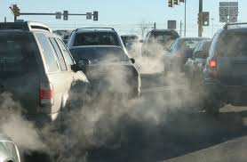

Air Pollution Caused By Transportation In Yangon
n Yangon, are a major source of air pollution, frequently pushing AQI levels into unhealthy ranges (50–200+).

Transportation pollution
Contributing factors include high concentrations of older vehicles, poor-quality fuel, heavy diesel use, and weak emission regulations. Road transport contributes roughly 73% of transport sector CO2 emissions.
n the bustling streets of Yangon, the city’s skyline is often hazy and filled with fog. It can be recognised as dangerously polluted air in the city. Therefore, breathing clean air has become a daily challenge for the residents. It is not just an environmental issue but also a public‑health and social‑justice concern, deeply connected with Myanmar’s path toward sustainable development. It is observed that Yangon’s air quality often reaches levels categorised as “unhealthy”. Burmese News International (BNI) (2025) recorded the city as one of the most polluted cities globally, with an Air Quality Index (AQI) of 165, on 27 January 2025. In addition, another report noted that AQI values in Yangon vary between 50 and 200, with levels around 200 considered harmful to health